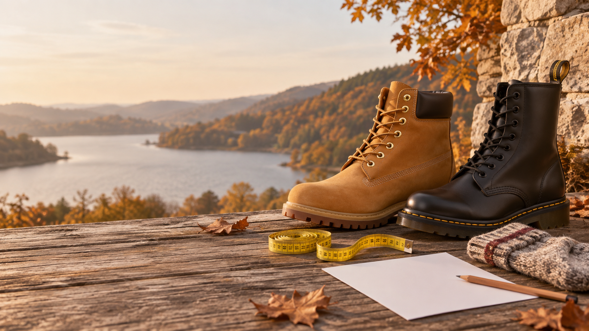

The first autumn boot purchase often brings a small contradiction. We want enough room for warmer socks, but we do not want the boot to move around. We want room to walk, but not a toe box so long that it changes the way we step. The number on the label cannot solve all of those decisions by itself.
A boot is more structured than a lightweight trainer. It may have a firmer sole, an ankle collar, a warmer lining and a different last. That means the right size depends on foot length, but also on width, instep, socks, insoles and the way the boot closes.
This method helps you compare autumn boots across brands and check a particular purchase before removing the tags. It does not try to turn one brand's size into another brand's size automatically. It gives the decision a better starting point: measurements, intended use and a sensible movement test.

Choose with the longer foot, the real sock and the model's own size chart. Leave room to move your toes and walk naturally, but do not buy a longer boot to compensate for a narrow last or a low instep.
Boot sizing starts with your foot, not last year's number
The size you wore in trainers can be a clue, but it is not the answer. A boot from another brand may have a rounder toe, a higher instep or a different way of holding the heel. Even within one brand, a hiking boot, Chelsea boot and dress boot can use very different proportions.
Before opening the chart, decide how you will use the pair. Walking around town in a thin sock is different from wearing the boot for hours with wool, an extra insole or trousers that sit against the shaft. Intended use defines the useful room and prevents “size up” becoming a generic answer.
Measure both feet at the end of the day
Feet can change slightly in volume after several hours of standing. To reduce surprises, measure at the end of the day and wear the socks you actually plan to use. The official Timberland size guide suggests placing the foot on paper against a wall, marking the longest point and repeating the measurement for both feet. It is a useful starting process for any boot.
Keep your heel against the wall and distribute your weight over both feet. Mark the end of the longest toe — it is not always the first toe — and measure from the edge of the paper to the mark. Repeat on the other foot and write down the millimetres, not only the European size a chart happens to suggest.
If the two measurements look very different, repeat them. The buying reference is the foot that needs more room, because a boot that works on the shorter foot may feel tight on the longer foot later in the day.
Socks change the useful space
Socks are not a last-minute detail. A thick knit takes volume across the instep and can change how the heel settles; a heavy seam can create pressure even when the length is right. Test the boot with a sock similar to the one you will wear through the season, not the thinnest sock you own just to make the foot fit.
If you switch between socks, choose the most demanding combination you will use regularly and test it indoors. The boot should close without compressing the instep, but the foot should not slide forward while walking. If you use an insole, put it in during the test: adding it later can remove the room you thought you had.
A larger size may add length, but it can also leave too much space behind the heel. The foot then moves, the sock wrinkles and stability gets worse. The goal is for the real sock to fit without turning the boot into an empty container.
Length: allow movement, not a runway
There should be useful space in front of the toes so they can extend as you walk and do not hit the toe box downhill. Do not judge this by pushing a thumb into a relaxed, barefoot boot. Check it while standing, with your weight on the foot and the boot closed as you will actually wear it.
Walk for a few minutes. Notice whether your toes curl to hold the boot, whether they touch when you step down, or whether the heel lifts excessively. A little initial movement can occur in a stiff boot, but the foot should not keep sliding forward.
A boot does not have to feel like a flexible running shoe. It should allow a stable stride and a reasonable flex point. If the length works but the toe box compresses your toes because of its shape, look for a different last before moving up a size.
Width and instep: what a larger size cannot fix
When the length seems right but the boot presses at the sides, around a bunion or over the instep, do not assume you need more length. A larger size may loosen the heel while leaving the pressure in exactly the same place if the construction has not changed.
Look for repeated marks after walking and check whether the tongue opens or bulges when you close the boot. With laces, adjust from the toe towards the ankle instead of tightening the top all at once. With elastic panels or a zip, check that the opening is comfortable and does not compress you once closed.
Useful width also depends on the insole and outsole. Leather or nubuck may relax slightly across the width, but it is not a good idea to buy a painful boot hoping it will become comfortable. Length and toe movement should be solved from day one.
The ankle and shaft are part of the fit
On a low boot, check that the collar does not rub your ankle as you flex. On a taller boot, sit down, climb a step and wear the trousers you plan to use. Shaft height may not change the number on the size chart, but it can decide whether the model works for your leg.
The closure must hold the heel and midfoot. Fasten the boot as you normally would and walk in both boots. If you have to tighten it until the instep is marked, or the zip opens as your ankle moves, the issue may be volume or pattern rather than size.
How to read a boot size chart
Check whether the chart describes foot length or insole length. Confirm the unit, category and intended range, and look for model-specific fit advice. An EU/UK/US conversion helps you orient yourself, but it does not replace millimetres or explain width.
The SIZES Timberland and Dr. Martens comparison uses two recognisable silhouettes to show the point: the Timberland 6-Inch Premium and Dr. Martens 1460 should not be treated as equivalents just because the box numbers look similar. The current chart and the exact model take priority.
Save a screenshot or note with the chart you used. Brands can change recommendations, add width options or separate collections. Knowing which model and guide informed your decision makes a return or future purchase much easier to understand.
What to do when you are between sizes
First identify the measurement that is at the limit. If you need more length and the heel remains secure, the larger size may be reasonable. If the length is already generous but the width is tight, change the last or model. If sock volume is the issue, try a different closure or construction before deciding.
With structured boots, do not expect wear to solve a short toe box. The official Dr. Martens size guide explains that fit varies by silhouette and that a material may give across the width but not in length. It also notes that when between sizes, a slightly larger size can work with an insole: that is an option to assess, not a universal rule.
When buying online, check the return window before removing tags. Try the pair indoors with real socks, walk, sit and step down. If the issue appears in one specific area, that evidence helps you decide whether you need another size, width or model.
A simple example
Imagine that your longer foot measures 267 mm in an autumn sock. One size has enough length, but the instep is marked while the heel stays secure. The next size frees the instep but lets the foot slide forward. The responsible answer is not automatically the larger size: look for a last with more volume while keeping the length that already worked.
A five-minute test before removing the tags
Test both feet with the clothes you will really wear. Walk in a straight line, turn, step up, sit down and lift the front of the foot. Then check the toe box, sides, instep, heel and shaft. Ask where you feel pressure, but also notice whether your posture changes to avoid a painful spot.
Take the boot off and look at the sock. A deep mark that repeats in the same place is worth investigating. Check whether the heel has shifted or the toes have moved forward. The goal is not the same softness as a trainer; it is comfortable, stable support.
Save the reference for the next purchase
When a boot works, save the longer-foot measurement, model, size, sock and fit notes. Add whether you used an insole, whether the shaft rubbed and how long the material took to soften. That record is more useful than keeping only “a UK 8”.
With SIZES you can keep the measurement together with the context of the purchase. For the broader method, read how to read an EU, UK and US size guide, what to do when you are between sizes and why sizes change between brands.
Checklist for choosing autumn boots online
Before you place the order
- Measure both feet while standing and use the longer one.
- Repeat the measurement in the socks you plan to wear.
- Write down millimetres, not only the converted size.
- Check whether the chart describes foot length or insole length.
- Review length, width, instep, heel hold and shaft.
- Test the insole and closure if you will use them for real.
- Walk, turn, sit and step down indoors.
- Check returns and save the model together with your measurements.
The best size is the one that still works while walking
An autumn boot needs to protect, hold and let your foot move. The right purchase is not the one that maximises space or repeats last season's number. It is the one that combines the longer foot, the real sock, the last and the way you will use the pair.
Measure before choosing, check the current chart and test movement before wearing the boots outside. When you keep the reference, the next purchase starts with evidence rather than a guess.
Frequently asked questions
Should I measure my feet before buying boots online?
Yes. Measure both feet while standing, wearing the socks you plan to use, and use the longer foot as your reference. Then compare it with the model's current size chart.
Should I size up for thick socks?
Not automatically. Test the real sock and check that there is useful room without the heel slipping or the foot sliding forward.
What should I do when I am between boot sizes?
Work out whether you need more length, width or volume. Check the last and the hold before sizing up; a longer boot does not fix a narrow fit.
Will boots stretch with wear?
Some materials may relax across the width, but do not buy a short boot expecting it to gain length. The toe box should be comfortable from the start.